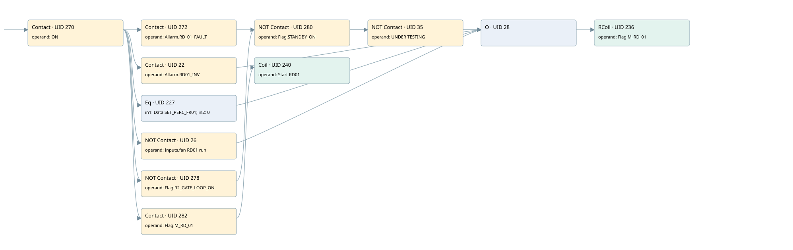

rd01
motors 1 · 검색 색인 순서 7 · 원본 내부 NID 추정 7
백업 PLF 원본의 2783788 바이트 위치에서 복원한 XML. 검색 문서 1936의 객체 키 161022008811000000000000와 연결했다. 이름 해석 12/12개. 남은 RefId는 상수 또는 미해석 참조다.
연결 구조 다시 그리기
원본 Part/PCon/Wire를 이용한 연결도다. TIA 화면의 래더 배치 또는 실행 결과를 재현한 그림은 아니다. 핀 연결은 아래 표와 원본 XML을 기준으로 읽는다. 노드 위에 마우스를 두면 피연산자 이름을 볼 수 있다.

접점·코일·블록과 피연산자
| Part UID | Gate | Negated 핀 | 연결 피연산자 |
|---|---|---|---|
| 270 | Contact | operand = ON | |
| 272 | Contact | operand = Allarm.RD_01_FAULT | |
| 22 | Contact | operand = Allarm.RD01_INV | |
| 227 | Eq | in1 = Data.SET_PERC_FR01; in2 = 0 | |
| 26 | Contact | operand | operand = Inputs.fan RD01 run |
| 278 | Contact | operand | operand = Flag.R2_GATE_LOOP_ON |
| 280 | Contact | operand | operand = Flag.STANDBY_ON |
| 35 | Contact | operand | operand = UNDER TESTING |
| 28 | O | ||
| 236 | RCoil | operand = Flag.M_RD_01 | |
| 282 | Contact | operand = Flag.M_RD_01 | |
| 240 | Coil | operand = Start RD01 |
접점 경로를 펼친 조건식
Contact·O/A·비교기의 원본 연결을 읽기 쉽게 펼친 보조 해석이다. POWER는 전원 레일 시작을 뜻한다. 호출 블록·에지·타이머의 내부 동작과 다중 쓰기 순서는 이 표로 실행 검증하지 않았다. 미해석 핀과 RefId는 원문 연결표에서 확인한다.
| UID | 동작 | 대상 | 원본 접점 경로 | 내용 |
|---|---|---|---|---|
| 236 | RCoil | Flag.M_RD_01 | ((ON AND Allarm.RD_01_FAULT) OR (ON AND Allarm.RD01_INV) OR (ON AND [Data.SET_PERC_FR01 = 0]) OR (ON AND NOT [Inputs.fan RD01 run]) OR (((ON AND NOT [Flag.R2_GATE_LOOP_ON]) AND NOT [Flag.STANDBY_ON]) AND NOT [UNDER TESTING])) | 조건 성립 시 Reset |
| 240 | Coil | Start RD01 | (ON AND Flag.M_RD_01) | 조건에 따른 Coil 기록 |
원본 배선 연결
| Wire UID | 동일 Wire 연결 끝점 |
|---|---|
| 284 | Powerrail {} ↔ Part 270.in |
| 252 | ORef 241 (ON) ↔ Part 270.operand |
| 271 | Part 270.out ↔ Part 272.in ↔ Part 22.in ↔ Part 227.pre ↔ Part 26.in ↔ Part 278.in ↔ Part 282.in |
| 253 | ORef 242 (Allarm.RD_01_FAULT) ↔ Part 272.operand |
| 24 | Part 272.out ↔ Part 28.in1 |
| 21 | ORef 23 (Allarm.RD01_INV) ↔ Part 22.operand |
| 29 | Part 22.out ↔ Part 28.in2 |
| 254 | ORef 243 (Data.SET_PERC_FR01) ↔ Part 227.in1 |
| 255 | ORef 244 (0) ↔ Part 227.in2 |
| 31 | Part 227.out ↔ Part 28.in3 |
| 25 | ORef 27 (Inputs.fan RD01 run) ↔ Part 26.operand |
| 32 | Part 26.out ↔ Part 28.in4 |
| 260 | ORef 247 (Flag.R2_GATE_LOOP_ON) ↔ Part 278.operand |
| 279 | Part 278.out ↔ Part 280.in |
| 261 | ORef 248 (Flag.STANDBY_ON) ↔ Part 280.operand |
| 33 | Part 280.out ↔ Part 35.in |
| 34 | ORef 36 (UNDER TESTING) ↔ Part 35.operand |
| 37 | Part 35.out ↔ Part 28.in5 |
| 30 | Part 28.out ↔ Part 236.in |
| 265 | ORef 249 (Flag.M_RD_01) ↔ Part 236.operand |
| 266 | ORef 250 (Flag.M_RD_01) ↔ Part 282.operand |
| 283 | Part 282.out ↔ Part 240.in |
| 268 | ORef 251 (Start RD01) ↔ Part 240.operand |
식별자 해석 근거 12개
| ORef UID | RefId | 이름 | IdentXmlPart 파일 | 해석 방법 |
|---|---|---|---|---|
| 241 | 1 | ON | 0602-IdentXmlPart.xml | UID/RID + search-text + NID agreement |
| 242 | 43 | Allarm.RD_01_FAULT | 0604-IdentXmlPart.xml | UID/RID + search-text + NID agreement |
| 23 | 203 | Allarm.RD01_INV | 0604-IdentXmlPart.xml | UID/RID + search-text + NID agreement |
| 243 | 44 | Data.SET_PERC_FR01 | 0604-IdentXmlPart.xml | UID/RID + search-text + NID agreement |
| 244 | 22 | 0 | 0606-IdentXmlPart.xml | literal candidate: UID/RID/NID + nearby named declarations + search-text agreement |
| 27 | 222 | Inputs.fan RD01 run | 0604-IdentXmlPart.xml | UID/RID + search-text + NID agreement |
| 247 | 46 | Flag.R2_GATE_LOOP_ON | 0604-IdentXmlPart.xml | UID/RID + search-text + NID agreement |
| 248 | 11 | Flag.STANDBY_ON | 0604-IdentXmlPart.xml | UID/RID + search-text + NID agreement |
| 36 | 4 | UNDER TESTING | 0602-IdentXmlPart.xml | UID/RID + search-text + NID agreement |
| 249 | 47 | Flag.M_RD_01 | 0604-IdentXmlPart.xml | UID/RID + search-text + NID agreement |
| 250 | 47 | Flag.M_RD_01 | 0604-IdentXmlPart.xml | UID/RID + search-text + NID agreement |
| 251 | 48 | Start RD01 | 0602-IdentXmlPart.xml | UID/RID + search-text + NID agreement |
검색 코드 보조 자료
참조 명칭을 찾기 위한 자료이며 실행 순서나 AND/OR 관계는 위 연결표로 확인한다.
"on" "allarm".rd_01_fault "flag".m_rd_01 "allarm".rd01_inv "data".set_perc_fr01 0 "inputs"."fan rd01 run" "flag".r2_gate_loop_on "flag".standby_on "under testing" "flag".m_rd_01 "start rd01"